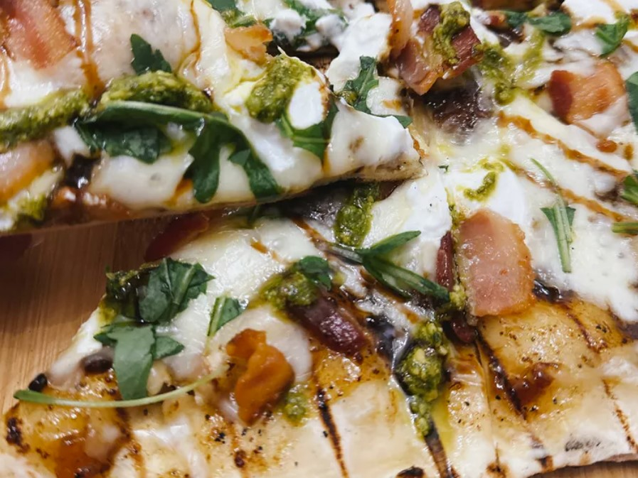

Grilled Bacon Pizza

Description
This grilled bacon pizza is loaded with layers of flavor and double the bacon. Get ready, this may just become your favorite!
Ingredients
- 1 pound prepared pizza dough
- 2 teaspoons olive oil
- 1/3 cup bacon jam
- 1/2 cup shredded mozzarella
- 1/4 cup ricotta cheese
- 1/3 cup cooked, chopped bacon
- 1/4 cup arugula, torn
- 2 tablespoons pesto
- 1 tablespoon balsamic glaze
- 2 tablespoons crumbled ricotta salata
Steps
- Preheat a gas grill with all burners on High for 10 to 15 minutes. Shape pizza dough and brush with olive oil.
- Reduce the flame on half of the grill burners to Low, to create areas of direct and indirect heat.
- Carefully place dough, olive oil side facing down, onto the grill over direct heat. Close the cover. Let dough grill until the bottom is just barely cooked and shows char marks, 1 to 3 minutes.
- Flip dough over and cook 2 to 3 more minutes. Remove dough to a baking sheet.
- Spread bacon jam over pizza dough; sprinkle mozzarella cheese over dough. Place small dollops of ricotta cheese onto pizza. Scatter cooked bacon pieces over the pizza.
- Return pizza to grill and cook until cheese has melted, 3 to 4 more minutes.
- Scatter small pieces of arugula onto pizza. Add pesto; drizzle with balsamic glaze. Scatter ricotta salata crumbles over pizza. Cut into wedges and serve.
Return